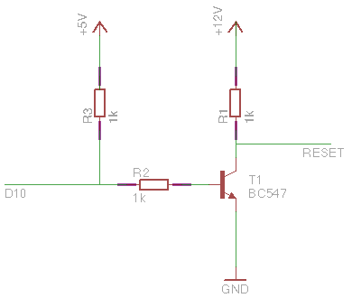
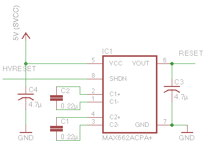

<html>
<head>
<style type="text/css">

.circuit {
	width: 35%;
	float: right;
	margin: 20px;
}

</style>
</head>
</html><h3>Generating High Voltage</h3>

As their name implies, the High Voltage Serial and High Voltage Parallel Programming techniques require a +12V signal. It should be noted that the <em>current</em> drawn from this signal is quite small. 

Here are some ways to generate that 12V signal, depending on what components you have at hand.

<h4>Using an External Power Supply</h4>



By far the simplest method is to use an external 12V power supply. Either bring the power directly to the bread board (connecting the ground to the Arduino ground), or plug it into the Arduino and use the Arduino <strong>Vin</strong> pin as the 12V source. To switch this signal on and off using the Slave Reset pin (<strong>D10</strong>), any NPN transistor with a reasonably large hFE should work in this circuit. <strong>R3</strong> is a pull-up resistor ensuring that the 12V signal is turned off when <strong>D10</strong> is undefined (e.g. because the sketch is not running), while <strong>R1</strong> limits the current flowing through the transistor.

<h4 style="clear:both">Using a Charge Pump IC</h4>



The Maxim MAX662ACPA+ is an integrated circuit that, combined with some capacitors, can generate a 12V, 30mA signal from a 5V input. The Slave Reset pin <strong>D10</strong> is here connected to the <strong>SHDN</strong> pin, which will put the MAX662ACPA+ into <em>shutdown mode</em>. As opposed to the previous circuit, in shutdown mode, the RESET pin will be 5V instead of 0V, but for our purposes, this makes no difference.